अध्याय 10: नियोजित विकास की राजनीति
(Politics of Planned Development) - भाग 1: विकास के विचार
1. विकास का अर्थ क्या है?
प्रिय विद्यार्थियों, आजादी के बाद भारत के सामने सबसे बड़ा सवाल था—'विकास' (Development) कैसे किया जाए? विकास का मतलब केवल सड़कें और फैक्ट्रियाँ बनाना नहीं है, बल्कि इसका मतलब लोगों के जीवन स्तर को ऊँचा उठाना भी है।
विकास के दो मुख्य मॉडल (Models of Development):
- पूँजीवादी मॉडल (Capitalist Model): जैसा अमेरिका और यूरोप में था। इसमें निजी संपत्ति और बाजार को आजादी दी जाती है।
- समाजवादी मॉडल (Socialist Model): जैसा सोवियत संघ (USSR) में था। इसमें सरकार संसाधनों पर नियंत्रण रखती है और गरीबों के भले पर ध्यान देती है।
भारत ने किसी एक को नहीं चुना, बल्कि अपनी जरूरतों के हिसाब से एक 'मिश्रित अर्थव्यवस्था' (Mixed Economy) का रास्ता चुना।
📌 नियोजन (Planning) का अर्थ और महत्त्व
नियोजन का अर्थ (Meaning of Planning): नियोजन का सरल अर्थ है—देश के विकास के लिए एक व्यवस्थित रूपरेखा या योजना बनाना। इसका मतलब यह है कि देश के पास जो भी संसाधन (पैसा, कोयला, लोहा, श्रम आदि) उपलब्ध हैं, उनका किस तरह सही और योजनाबद्ध तरीके से उपयोग किया जाए ताकि देश का संतुलित विकास हो सके।
नियोजन के 5 प्रमुख उद्देश्य और महत्त्व (Objectives & Importance):
- 1. संसाधनों का कुशल आवंटन (Efficient Resource Allocation): सीमित संसाधनों का बर्बादी के बिना उन्हें प्राथमिकता के आधार पर कृषि और उद्योगों में लगाना।
- 2. तीव्र आर्थिक विकास (Rapid Economic Growth): राष्ट्रीय आय और प्रति व्यक्ति आय को बढ़ाने के लिए योजनाबद्ध तरीके से उद्योगों और खेती को मजबूत करना।
- 3. सामाजिक न्याय व समानता (Social Justice & Equality): अमीर और गरीब के बीच के अंतर को कम करना और समाज के पिछड़े वर्गों का उत्थान करना।
- 4. रोजगार के अवसरों का सृजन (Employment Generation): नए कारखाने और लघु उद्योग लगाकर लोगों के लिए रोजगार बढ़ाना और बेरोजगारी दूर करना।
- 5. आत्मनिर्भरता (Self-reliance): विदेशों से खाद्यान्न (अनाज) और उपकरणों के आयात पर निर्भरता समाप्त करके देश को आत्मनिर्भर बनाना।
🌐 विकास के तीन मॉडल और उनकी विशेषताएं (Models of Development)
आजादी के समय विकास के तीन मुख्य मॉडल चर्चा में थे। तीनों की 5-5 प्रमुख विशेषताएं नीचे दी गई हैं:
1. पूँजीवादी मॉडल (Capitalist Model - अमेरिका):
- निजी स्वामित्व (Private Ownership): कारखानों, ज़मीन और व्यापार पर पूरी तरह निजी कंपनियों का अधिकार होता है।
- बाजार की स्वतंत्रता (Free Market System): वस्तुओं के मूल्य और उत्पादन का निर्धारण मांग और आपूर्ति (Demand and Supply) के आधार पर होता है।
- लाभ कमाना मुख्य उद्देश्य (Profit Motive): कोई भी आर्थिक गतिविधि व्यक्तिगत लाभ कमाने के उद्देश्य से की जाती है।
- स्वतंत्र प्रतिस्पर्धा (Open Competition): विभिन्न निजी कंपनियों के बीच खुली प्रतियोगिता होती है, जिससे उपभोक्ता को बेहतर विकल्प मिलते हैं।
- सरकार का न्यूनतम हस्तक्षेप (Minimum State Role): सरकार केवल सुरक्षा और कानून व्यवस्था देखती है, व्यापारिक गतिविधियों में हस्तक्षेप नहीं करती।
2. समाजवादी मॉडल (Socialist Model - सोवियत संघ):
- राज्य का पूर्ण स्वामित्व (State Ownership): देश के सभी महत्वपूर्ण साधनों, ज़मीन और बड़े कारखानों पर केवल सरकार का नियंत्रण होता है।
- सामाजिक कल्याण मुख्य लक्ष्य (Social Welfare): व्यक्तिगत लाभ के स्थान पर पूरे समाज की भलाई और सबकी बुनियादी जरूरतों को पूरा करना प्राथमिकता होती है।
- केंद्रीकृत नियोजन (Centralized Planning): देश का विकास सरकार द्वारा बनाई गई केंद्रीय योजनाओं (जैसे पंचवर्षीय योजनाओं) के अनुसार होता है।
- आर्थिक समानता पर बल (Economic Equality): अमीर-गरीब की खाई को पाटने के लिए सरकार धन का वितरण समान रूप से करने का प्रयास करती है।
- निजी संपत्ति का अभाव (Limited Private Property): निजी उपयोग को छोड़कर व्यवसाय के लिए बड़ी संपत्ति रखने पर भारी प्रतिबंध होते हैं।
3. मिश्रित अर्थव्यवस्था मॉडल (Mixed Economy Model - भारत का विकल्प):
- सार्वजनिक व निजी क्षेत्र का सह-अस्तित्व (Co-existence): बुनियादी और भारी उद्योग सरकारी नियंत्रण में होते हैं, जबकि छोटे उद्योग व कृषि निजी हाथों में होते हैं।
- लोकतांत्रिक नियोजन (Democratic Planning): योजनाएं तानाशाही तरीके से नहीं, बल्कि संसद में चर्चा और लोकतांत्रिक सलाह से बनाई जाती हैं।
- नियमन व नियंत्रण (Regulation of Private Sector): निजी क्षेत्र को मनमानी करने से रोकने के लिए सरकार लाइसेंस प्रणाली लागू करती है।
- वंचितों को संरक्षण (Protection to Weaker Sections): सरकार राशन व्यवस्था, सब्सिडी और कल्याणकारी योजनाओं से गरीबों की मदद करती है।
- संतुलित विकास (Balanced Growth): सरकार यह सुनिश्चित करती है कि देश का विकास केवल कुछ बड़े शहरों तक सीमित न होकर गाँवों और पिछड़े क्षेत्रों में भी हो।
2. विकास और उसके अंतर्विरोध: ओडिशा का उदाहरण
ओडिशा में लोहे के विशाल भंडार हैं। सरकार चाहती थी कि वहां स्टील प्लांट लगे ताकि रोजगार मिले और राज्य समृद्ध हो। लेकिन इसके दो पहलू थे:
- आदिवासियों का डर: उन्हें लगा कि उद्योग लगने से वे अपनी ज़मीन और जंगलों से बेदखल हो जाएंगे।
- पर्यावरणविदों की चिंता: उद्योगों से जंगलों और नदियों को होने वाला नुकसान।
यह दिखाता है कि एक का विकास, दूसरे के लिए विनाश भी हो सकता है। यह 'विकास की राजनीति' का असली चेहरा है।
3. नियोजन (Planning) की शुरुआत
आजादी के समय भारत ने 'नियोजन' यानी प्लानिंग को विकास का आधार बनाया। इसका मतलब था—संसाधनों का सही इस्तेमाल करना और उन्हें प्राथमिकता देना।
- योजना आयोग (Planning Commission): मार्च 1950 में इसकी स्थापना हुई। प्रधानमंत्री इसके अध्यक्ष होते थे।
- बम्बई योजना (Bombay Plan, 1944): आजादी से पहले ही बड़े उद्योगपतियों ने मिलकर एक योजना बनाई थी कि देश का विकास कैसे हो। (NCERT Fact)
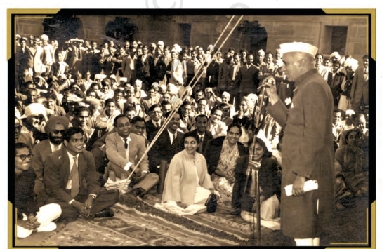
NCERT पुस्तक का ऐतिहासिक चित्र (Nehru addressing Planning Commission):
विवरण: योजना आयोग (Planning Commission) के सदस्यों को संबोधित करते हुए भारत के प्रथम प्रधानमंत्री जवाहरलाल नेहरू।
बोर्ड परीक्षा विशेष प्रश्नोत्तर (CBSE Board Q&A):
• प्रश्न 1: योजना आयोग का गठन कब हुआ था और इसके अध्यक्ष कौन होते थे?
• उत्तर: योजना आयोग का गठन **मार्च 1950** में भारत सरकार के एक सीधे-सादे प्रस्ताव के जरिए हुआ था। देश के प्रधानमंत्री इसके अध्यक्ष होते थे।
• प्रश्न 2: योजना आयोग की मुख्य भूमिका क्या थी?
• उत्तर: योजना आयोग एक सलाहकार की भूमिका निभाता था और देश के विकास के लिए पाँच साल की योजनाएं (पंचवर्षीय योजनाएं) तैयार करता था।
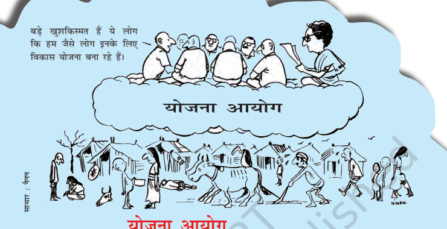
NCERT पुस्तक का प्रसिद्ध कार्टून (Planning Commission Cartoon by Nenan):
विवरण: यह कार्टून नीति निर्माताओं और ग्रामीण वास्तविकताओं के बीच की खाई को दर्शाता है। शीर्ष पर बैठे योजनाकार कह रहे हैं—"बड़े खुशकिस्मत हैं ये लोग कि हम जैसे लोग इनके लिए विकास योजना बना रहे हैं।" जबकि नीचे गरीब ग्रामीण बुनियादी आवश्यकताओं के लिए तरस रहे हैं।
बोर्ड परीक्षा विशेष कार्टून आधारित प्रश्नोत्तर (CBSE Board Q&A):
• प्रश्न 1: यह कार्टून 'नियोजन' (Planning) के किस अंतर्विरोध को दर्शाता है?
• उत्तर: यह कार्टून विकेंद्रीकृत नियोजन के अभाव और **ऊपर से थोपी गई योजना नीति (Top-Down Planning)** को दर्शाता है, जिसमें धरातल पर रहने वाले गरीब ग्रामीणों की वास्तविक जरूरतों को समझे बिना दिल्ली में बैठे योजनाकार नीतियां बनाते थे।
• प्रश्न 2: भारत सरकार ने इस समस्या को दूर करने के लिए हाल ही में क्या बड़ा बदलाव किया है?
• उत्तर: 1 जनवरी 2015 को योजना आयोग के स्थान पर **नीति आयोग (NITI Aayog)** का गठन किया गया, जो 'नीचे से ऊपर' (Bottom-Up) की ओर सहयोगात्मक संघवाद के सिद्धांत पर कार्य करता है।
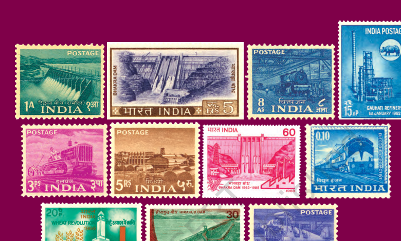
नया भारत: भारी उद्योगों और बांधों (जैसे भाखड़ा नांगल) के निर्माण के जरिए आधुनिक भारत की नींव।
📬 आजादी के समय के 12 ऐतिहासिक डाक टिकटों का सचित्र विवरण
ये डाक टिकट भारत की आजादी के शुरुआती वर्षों (1951-1956) में जारी किए गए थे। इनका मुख्य उद्देश्य देश की औद्योगिक प्रगति, कृषि सुधार और सार्वजनिक सेवाओं के प्रति जनता में राष्ट्र निर्माण का उत्साह जगाना था।
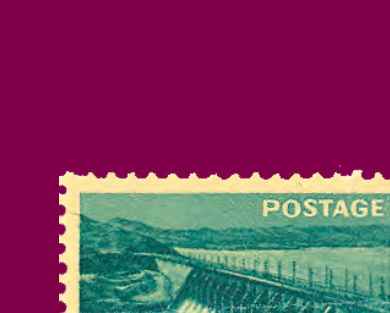
1. तिलैया बाँध डाक टिकट (Tilaiya Dam - 1953)
• मूल्य: 9 पाइस (Pies)
• इतिहास: दामोदर घाटी परियोजना (DVC) के तहत बना पहला बाँध।
• महत्त्व: बाढ़ नियंत्रण और पनबिजली (Hydroelectricity) उत्पादन का प्रतीक।
2. भाखड़ा बाँध डाक टिकट (Bhakra Dam - 1953)
• मूल्य: 2 आना (Annas)
• इतिहास: सतलुज नदी पर बना भारत का सबसे ऊँचा गुरुत्वीय बाँध।
• महत्त्व: नेहरू जी ने इसे 'आधुनिक भारत का मंदिर' कहा, जो सिंचाई और बिजली का आधार बना।
3. चित्तरंजन लोकोमोटिव (Chittaranjan Locomotive - 1953)
• मूल्य: 3 आना (Annas)
• इतिहास: भारत में भाप के रेल इंजन बनाने का पहला कारखाना (पश्चिम बंगाल)।
• महत्त्व: परिवहन क्षेत्र में आत्मनिर्भरता और भारी इंजीनियरिंग उद्योग का प्रतीक।
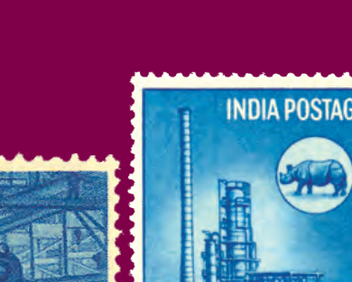
4. सिंदरी खाद कारखाना (Sindri Fertilizer - 1953)
• मूल्य: 4 आना (Annas)
• इतिहास: भारत का पहला सार्वजनिक क्षेत्र का रासायनिक उर्वरक (खाद) कारखाना (झारखंड)।
• महत्त्व: कृषि उत्पादन बढ़ाने के लिए रासायनिक खादों में आत्मनिर्भरता।
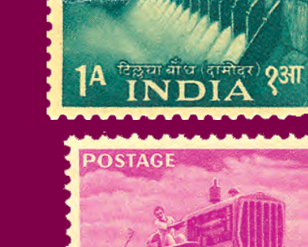
5. भारतीय विमानन / एयर इंडिया (Indian Aviation - 1953)
• मूल्य: 12 आना (Annas)
• इतिहास: 1953 में विमानन क्षेत्र का राष्ट्रीयकरण करके 'एयर इंडिया' की स्थापना की गई।
• महत्त्व: भारत के हवाई परिवहन नेटवर्क के आधुनिकीकरण और कनेक्टिविटी का प्रतीक।
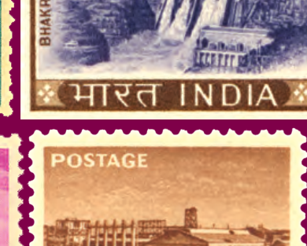
6. लोहा और इस्पात उद्योग (Iron & Steel Industry - 1955)
• मूल्य: 1 आना (Anna)
• इतिहास: जमशेदपुर (TISCO) और भिलाई जैसे बड़े स्टील कारखानों को समर्पित।
• महत्त्व: इस्पात (Steel) को सभी आधुनिक उद्योगों की रीढ़ माना गया, जो विकास का मूल था।
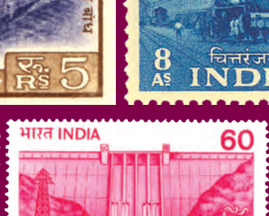
7. टेलीफोन उद्योग / आईटीआई (Telephone Industry ITI - 1955)
• मूल्य: 2 आना (Annas)
• इतिहास: इंडियन टेलीफोन इंडस्ट्रीज (ITI) बेंगलुरु की स्थापना के उपलक्ष्य में।
• महत्त्व: देश में दूरसंचार उपकरणों के निर्माण और घरेलू संचार नेटवर्क की शुरुआत।
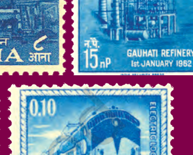
8. कृषि का यंत्रीकरण / ट्रैक्टर (Mechanized Farming - 1955)
• मूल्य: 3 आना (Annas)
• इतिहास: कृषि कार्यों में बैलों की जगह ट्रैक्टर और आधुनिक उपकरणों के इस्तेमाल का चित्रण।
• महत्त्व: अनाज उत्पादन बढ़ाने के लिए खेती के आधुनिकीकरण पर बल।
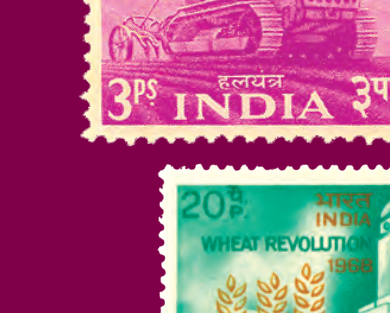
9. राष्ट्रीय मलेरिया नियंत्रण (Malaria Control - 1955)
• मूल्य: 4 आना (Annas)
• इतिहास: देशव्यापी मलेरिया उन्मूलन कार्यक्रम को दर्शाने वाला टिकट।
• महत्त्व: स्वास्थ्य सेवाओं में सुधार और उत्पादकता बढ़ाने के लिए स्वस्थ मानव संसाधन का विकास।
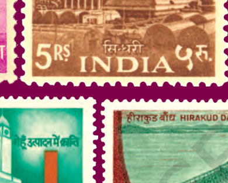
10. सार्वजनिक स्वास्थ्य सेवा (Public Health - 1955)
• मूल्य: 1 आना (Anna)
• इतिहास: प्राथमिक स्वास्थ्य केंद्रों और ग्रामीण चिकित्सा सेवाओं के प्रसार का चित्रण।
• महत्त्व: शिशु मृत्यु दर कम करने और औसत जीवन प्रत्याशा को सुधारने की सरकारी योजना।
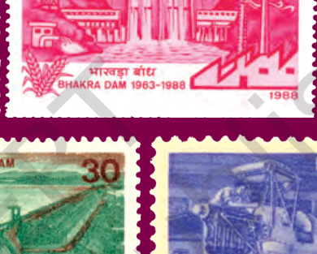
11. नियोजित विकास / प्रथम योजना (Planned Development - 1951)
• मूल्य: 1.5 आना (Annas)
• इतिहास: प्रथम पंचवर्षीय योजना की शुरुआत को समर्पित विशेष डाक टिकट।
• महत्त्व: खेती, उद्योग और पनबिजली के त्रिकोणीय विकास के सपने का प्रतीक।
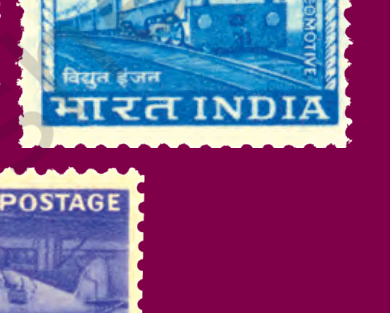
12. भारी उद्योग विकास / द्वितीय योजना (Heavy Industries - 1956)
• मूल्य: 5 रुपये (Rs. 5)
• इतिहास: द्वितीय पंचवर्षीय योजना के तहत स्थापित इस्पात और रासायनिक उद्योगों का चित्रण।
• महत्त्व: देश में तीव्र औद्योगिक क्रांति लाने और भारत को महाशक्ति बनाने के संकल्प का प्रतीक।
नियोजन (Planning): उपलब्ध संसाधनों का सर्वोत्तम उपयोग करते हुए भविष्य के लक्ष्यों को प्राप्त करने की एक व्यवस्थित प्रक्रिया।
भाग 2: पंचवर्षीय योजनाएं (Five Year Plans)
भारत ने सोवियत संघ की तरह पांच साल के लक्ष्यों की योजना बनाई। इन योजनाओं का उद्देश्य पूरे देश के विकास का खाका तैयार करना था।
1. पहली पंचवर्षीय योजना (1951-1956)
इस योजना का मुख्य उद्देश्य **'कृषि'** (Agriculture) और **'गरीबी'** को दूर करना था।
- मुख्य रणनीतिकार: के. एन. राज (K. N. Raj)।
- लक्ष्य: सिंचाई परियोजनाओं (जैसे भाखड़ा नांगल बाँध) की शुरुआत।
- खेती पर जोर: उस समय भारत में अनाज की बहुत कमी थी, इसलिए सरकार ने सिंचाई और खेती सुधारों पर सबसे अधिक ध्यान दिया।
- धीमी प्रगति: के. एन. राज का मानना था कि विकास 'समान' और 'सावधानी' के साथ होना चाहिए।
NCERT पुस्तक का चित्र (The Hindustan Times समाचार पत्र की कतरन - 1951):
विवरण: यह ऐतिहासिक समाचार पत्र की कतरन स्वतंत्र भारत के पहले बजट और **प्रथम पंचवर्षीय योजना (First Five-Year Plan)** को संसद में पेश किए जाने की रिपोर्ट को दर्शाती है। मुख्य शीर्षक है—"FIVE-YEAR PLAN PRESENTED TO PARLIAMENT" (संसद में पंचवर्षीय योजना पेश की गई) जिसमें कुल परिव्यय **₹2,069 करोड़** आंका गया था।
विवरण: यह ऐतिहासिक समाचार पत्र की कतरन स्वतंत्र भारत के पहले बजट और **प्रथम पंचवर्षीय योजना (First Five-Year Plan)** को संसद में पेश किए जाने की रिपोर्ट को दर्शाती है. मुख्य शीर्षक है—"FIVE-YEAR PLAN PRESENTED TO PARLIAMENT" (संसद में पंचवर्षीय योजना पेश की गई) जिसमें कुल परिव्यय **₹2,069 करोड़** आंका गया था.
🚀 दूसरी पंचवर्षीय योजना (1956-1961)
इस योजना ने भारत के विकास की दिशा पूरी तरह बदल दी. इसका मुख्य ध्यान 'भारी उद्योग' (Heavy Industry) पर था.
- 1. मुख्य रणनीतिकार: पी. सी. महालनोबिस (P. C. Mahalanobis).
- 2. उद्देश्य: तीव्र औद्योगीकरण (Rapid Industrialization).
- 3. मुख्य काम: लोहे और इस्पात के बड़े कारखाने (जैसे भिलाई, दुर्गापुर) बनाए गए.
- 4. संरक्षणवाद: सरकार ने विदेशी आयात पर शुल्क लगा दिया ताकि भारतीय उद्योगों को बढ़ने का मौका मिल सके.
पी.सी. महालनोबिस (1893-1972)
• अंतरराष्ट्रीय ख्यातिप्राप्त वैज्ञानिक और सांख्यिकीविद: इन्हें भारतीय सांख्यिकी का जनक (Father of Indian Statistics) कहा जाता है।
• संस्थापक: इन्होंने 1931 में **भारतीय सांख्यिकी संस्थान (ISI)** की कोलकाता में स्थापना की。
• दूसरी योजना के मुख्य रणनीतिकार: इन्होंने भारी उद्योगों के तीव्र विकास और सरकारी क्षेत्र की सक्रिय भूमिका का खाका तैयार किया。
• विचारधारा: वे तीव्र औद्योगिकीकरण और राष्ट्रीय आय को तेजी से बढ़ाने के पक्षधर थे।
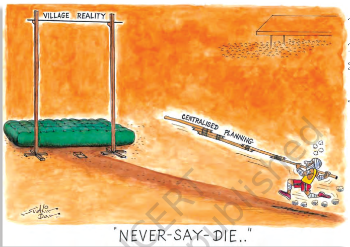
NCERT पुस्तक का प्रसिद्ध कार्टून (Centralized Planning Cartoon - Sudhir Dar):
विवरण: प्रसिद्ध कार्टूनिस्ट सुधीर दर द्वारा बनाया गया यह कार्टून 'केंद्रीकृत नियोजन' (Centralised Planning) के व्यावहारिक संकट को दर्शाता है। एक विशाल बाँस के पोल (Centralised Planning) के सहारे धावक (योजनाकार) सुदूर स्थित छोटे से बार (Village Reality) को पार करने का प्रयास कर रहा है, जो यह दर्शाता है कि केंद्रीकृत योजनाएं ग्रामीण धरातल की वास्तविकताओं के अनुकूल नहीं थीं।
बोर्ड परीक्षा विशेष कार्टून आधारित प्रश्नोत्तर (CBSE Board Q&A):
• प्रश्न 1: यह कार्टून नियोजित विकास की किस कमी को उजागर करता है?
• उत्तर: यह कार्टून दर्शाता है कि केंद्रीय स्तर पर बनी विशालकाय योजनाएं अक्सर अत्यधिक जटिल और अव्यावहारिक होती थीं, जिसके कारण वे ग्रामीण भारत की सरल व बुनियादी समस्याओं (Village Reality) का समाधान करने में असफल रहीं।
• प्रश्न 2: कार्टून में "NEVER-SAY-DIE.." (कभी हार न मानना) का क्या निहितार्थ है?
• उत्तर: इसका मतलब है कि तमाम असफलताओं और अव्यावहारिकता के बावजूद, देश के योजनाकार और सरकार हार माने बिना लगातार केंद्रीकृत नियोजन और पंचवर्षीय योजनाओं के मॉडल पर ही टिके रहे।
2. विकास की 'दो राहें' (Debate)
जब दूसरी योजना आई, तो एक बड़ा विवाद छिड़ गया—क्या भारत को पहले 'खेती' पर ध्यान देना चाहिए या 'उद्योगों' पर? आलोचकों का कहना था कि भारी उद्योगों पर खर्च करने से गाँवों और किसानों की अनदेखी हो रही है। (NCERT Insight)
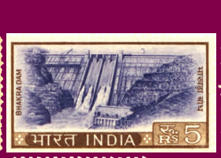
भाखड़ा नांगल: पंडित नेहरू द्वारा 'आधुनिक भारत का मंदिर' कहा जाने वाला विशाल बाँध। (NCERT Perspective)
🛑 मुख्य विचार:
पहली योजना ने **'नींव'** रखी, जबकि दूसरी योजना ने भारत को **'बड़ी छलांग'** लगाने का सपना दिखाया। लेकिन भारी उद्योगों पर ज्यादा पैसा खर्च होने की वजह से अनाज की भारी कमी हो गई, जिसने भारत को 'हरित क्रांति' की ओर मोड़ा।
भाग 3: कृषि बनाम उद्योग का विवाद (Debate)
जब दूसरी पंचवर्षीय योजना ने भारी उद्योगों पर सारा पैसा और ध्यान लगाना शुरू किया, तो गांधीवादी नेताओं और ग्रामीण क्षेत्रों के बीच से एक बड़ा विरोध खड़ा हो गया।
1. जे. सी. कुमारप्पा: गांधीवादी ढांचा
जे. सी. कुमारप्पा जैसे नेताओं का मानना था कि भारत का विकास तभी संभव है जब हम 'ग्राम-उद्योगों' (Village Industries) और 'खेती' पर ध्यान दें।
- कुमारप्पा का तर्क: भारी उद्योगों से केवल शहरों का भला होगा और गरीबी नहीं मिटेगी। विकास ऐसा होना चाहिए जो स्थानीय लोगों को रोजगार दे।
- चौधरी चरण सिंह: इन्होंने कांग्रेस छोड़कर अपनी पार्टी (भारतीय लोक दल) बनाई। उनका तर्क था कि खेती ही भारत की असली रीढ़ है और औद्योगिकरण से ग्रामीण भारत को नुकसान हो रहा है। (NCERT Insight)
जे.सी. कुमारप्पा (1892-1960)
• गांधीवादी अर्थशास्त्री: मूल नाम **जे.सी. कॉर्नेलियस** था, जो इंग्लैंड और अमेरिका से शिक्षित चार्टर्ड अकाउंटेंट थे।
• ग्राम-उद्योगों का मॉडल: इन्होंने ग्रामीण विकास और छोटे कुटीर उद्योगों को विकास का मुख्य केंद्र बनाने की वकालत की।
• प्रसिद्ध पुस्तक: इन्होंने **'इकोनॉमी ऑफ परमानेंस' (Economy of Permanence)** नामक पुस्तक लिखी, जिसमें वैकल्पिक विकास का गांधीवादी ढांचा प्रस्तुत किया।
• योजना आयोग में भूमिका: वे योजना आयोग के सदस्य के रूप में भी शामिल रहे और ग्रामीण विकास नीतियों का पुरजोर समर्थन किया।
🛡️ मुख्य विवाद क्या था?
विवाद इस बात को लेकर था कि सीमित संसाधनों का उपयोग कहाँ किया जाए:
- 1. उद्योगों के समर्थकों का तर्क: बिना आधुनिक उद्योगों के भारत कभी भी शक्तिशाली और आत्मनिर्भर नहीं बन पाएगा।
- 2. कृषि के समर्थकों का तर्क: जब तक भारत अपनी भूख नहीं मिटाएगा और अपनी 80% आबादी (किसानों) का भला नहीं करेगा, तब तक विकास केवल दिखावा है।
⚖️ कृषि बनाम उद्योग: दोनों पक्षों के 5-5 मुख्य तर्क
🌾 कृषि के पक्ष में 5 तर्क (Pro-Agriculture):
- 1. अधिकांश आबादी की आजीवika: भारत की लगभग 70-80% आबादी गांवों में रहती थी और कृषि पर निर्भर थी। कृषि को छोड़ना उनके जीवन के साथ खिलवाड़ था।
- 2. खाद्यान्न सुरक्षा (Food Security): उद्योगों के कारण खेती पिछड़ने से देश में अनाज की भयंकर कमी हो गई, जिससे विदेशों से भीख मांगनी पड़ी।
- 3. गरीबी का सीधा मुकाबला: उद्योगों में केवल कुछ कुशल लोगों को काम मिलता है, जबकि खेती का विकास सीधे गरीब मजदूरों और सीमांत किसानों को गरीबी से निकालता है।
- 4. कम पूंजी की आवश्यकता: भारी उद्योगों के लिए भारी विदेशी मुद्रा और कर्ज की जरूरत थी, जबकि कृषि विकास कम निवेश में अधिक प्रतिफल दे सकता था।
- 5. ग्रामीण औद्योगीकरण का आधार: जे.सी. कुमारप्पा का मानना था कि कृषि आधारित ग्राम-उद्योग (Agro-based Cottage Industries) ग्रामीण भारत को आत्मनिर्भर बना सकते थे।
🏭 उद्योग के पक्ष में 5 तर्क (Pro-Industry):
- 1. गरीबी से मुक्ति का एकमात्र साधन: पी.सी. महालनोबिस का मानना था कि केवल खेती पर निर्भर रहकर कोई भी देश अमीर नहीं बन सकता; औद्योगीकरण जरूरी है।
- 2. राष्ट्रीय सुरक्षा और संप्रभुता: स्टील, मशीनरी और सैन्य उपकरणों के लिए भारी उद्योगों का होना देश की स्वतंत्रता की रक्षा के लिए आवश्यक था।
- 3. रोजगार का विविधीकरण (Job Diversification): खेती पर जनसंख्या का अत्यधिक बोझ था। भारी उद्योगों से गैर-कृषि क्षेत्रों में लाखों नए रोजगार मिलने की संभावना थी।
- 4. तकनीकी प्रगति (Technological Progress): आधुनिक उद्योगों से नई तकनीक, बिजली और वैज्ञानिक सोच का विकास होता है, जिससे अंततः कृषि का भी यंत्रीकरण (ट्रैक्टर आदि) होता है।
- 5. आत्मनिर्भर अर्थव्यवस्था: भारी उद्योगों (लोहा, कोयला, cement) का विकास होने से देश विदेशों से आयात करने के बजाय निर्यात करने में सक्षम बनता था।
2. लोक बनाम निजी क्षेत्र (Public vs Private)
भारत ने एक 'मिश्रित अर्थव्यवस्था' चुनी, जहाँ सरकार और निजी व्यापारी दोनों को काम करने का मौका मिला। हालाँकि, शुरुआती सालों में **'सार्वजनिक क्षेत्र'** (Public Sector) यानी सरकारी कंपनियों का पलड़ा भारी रहा। (जैसे SAIL, BHEL)। इसे बाद में आलोचना मिली कि सरकारी नियंत्रण से भ्रष्टाचार और सुस्ती बढ़ गई।
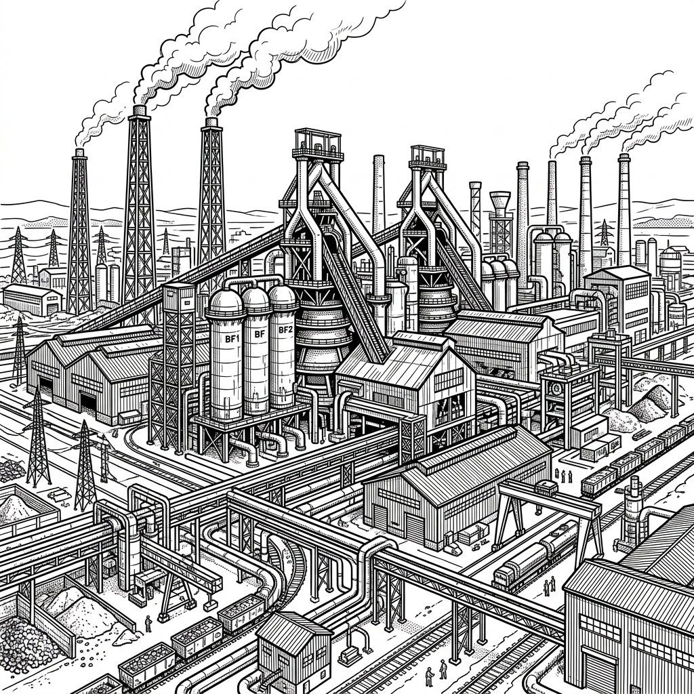
भारत की औद्योगिक उड़ान: स्टील प्लांट्स का निर्माण। (NCERT View)
🛑 मुख्य विचार:
विकास की राह में यह विवाद आज भी बना हुआ है। क्या हमें 'जीडीपी' पर ध्यान देना चाहिए या 'ग्रामीण विकास' पर? नेहरू के भारत ने उद्योगों को चुना, लेकिन 1960 के दशक में आई 'अकाल' (Famine) ने भारत को दोबारा खेती की अहमियत याद दिला दी।
⚖️ सार्वजनिक (लोक) बनाम निजी क्षेत्र: दोनों पक्षों के 5-5 मुख्य तर्क
🏢 सार्वजनिक क्षेत्र के पक्ष में 5 तर्क (Pro-Public):
- 1. सामाजिक कल्याण (Social Welfare): सरकारी कंपनियां लाभ कमाने के बजाय गरीबों को सस्ती दर पर बुनियादी सुविधाएं (बिजली, पानी, परिवहन) प्रदान करती हैं।
- 2. भारी निवेश क्षमता (Huge Capital Investment): स्टील प्लांट, बाँध और रेलवे जैसी परियोजनाओं में निजी क्षेत्र के पास निवेश करने की क्षमता या इच्छा नहीं थी।
- 3. एकाधिकार पर नियंत्रण (Preventing Monopolies): यदि सब कुछ निजी हाथों में छोड़ दिया जाता, तो टाटा, बिड़ला जैसे चंद उद्योगपतियों का पूरे देश पर आर्थिक नियंत्रण हो जाता।
- 4. समान क्षेत्रीय विकास: सरकार पिछड़े और दूरदराज के क्षेत्रों में फैक्ट्रियां लगाकर वहां का विकास करती है, जबकि निजी कंपनियां केवल मुनाफे वाले क्षेत्रों में जाती हैं।
- 5. रोजगार सुरक्षा: सार्वजनिक क्षेत्र में कर्मचारियों को नौकरी की सुरक्षा, निश्चित वेतन और सामाजिक सुरक्षा (पेंशन आदि) मिलती है, जिससे श्रमिक शोषण से बचते हैं।
💼 निजी क्षेत्र के पक्ष में 5 तर्क (Pro-Private):
- 1. अधिक कार्यकुशलता (Efficiency): निजी क्षेत्र में काम करने की गति तेज होती है और फिजूलखर्ची कम होती है क्योंकि वहां मुनाफे पर ध्यान दिया जाता है।
- 2. नवाचार और आधुनिक तकनीक (Innovation): निजी कंपनियां प्रतिस्पर्धा में टिके रहने के लिए नई तकनीक और विश्वस्तरीय उत्पाद लाती हैं।
- 3. लालफीताशाही से मुक्ति (No Red Tapism): सरकारी कंपनियों में फाइलों के लटकने और भ्रष्टाचार की समस्या होती है, जबकि निजी क्षेत्र में त्वरित निर्णय लिए जाते हैं।
- 4. लाइसेंस राज का अंत: आलोचकों का मानना था कि निजी क्षेत्र को छूट मिलने से निवेश बढ़ता है और उद्योग लगाने की प्रक्रिया आसान होती है।
- 5. बाजार प्रतिस्पर्धा (Market Competition): स्वस्थ प्रतिस्पर्धा से बाजार में एकाधिकार समाप्त होता है और उपभोक्ताओं को कम कीमत पर बेहतर उत्पाद मिलते हैं।
भाग 4: खाद्य संकट और हरित क्रांति (Green Revolution)
1960 के दशक में भारत को एक बहुत बड़े संकट का सामना करना पड़ा—अकाल और भुखमरी। इसी संकट ने भारत को **'हरित क्रांति'** का रास्ता दिखाया।
1. खाद्य संकट (Food Crisis) का दौर
1965-1967 के दौरान भारत के कई हिस्सों में—विशेषकर बिहार में—भयानक सूखा और अकाल पड़ा।
- विदेशी निर्भरता: भारत को अनाज के लिए अमेरिका पर निर्भर होना पड़ा (PL-480 योजना)। यह आत्मनिर्भर भारत के लिए एक बड़ा धक्का था।
- 'जय जवान जय किसान': लाल बहादुर शास्त्री ने यह नारा दिया ताकि देश की रक्षा और भूख—दोनों मोर्चों पर मजबूती आए। (NCERT Insight)
🌾 हरित क्रांति (The Green Revolution)
सरकार ने अब खेती में 'चमत्कारिक' बदलाव लाने का फैसला किया। इसके तीन मुख्य आधार थे:
- 1. उच्च उपज वाले बीज (HYV Seeds): विदेशों से लाए गए विशेष बीज जिनसे पैदावार कई गुना बढ़ सकती थी।
- 2. उर्वरक और सिंचाई: रासायनिक खादों और आधुनिक सिंचाई का इस्तेमाल।
- 3. सरकारी सहायता: किसानों को अधिक मूल्य पर फसल खरीदने का आश्वासन (MSP)।
2. हरित क्रांति के परिणाम (Pros and Cons)
सकारात्मक प्रभाव: भारत अनाज के क्षेत्र में 'आत्मनिर्भर' बना। पंजाब, हरियाणा और पश्चिमी उत्तर प्रदेश के किसानों की आर्थिक स्थिति सुधरी।
नकारात्मक प्रभाव: अमीर और गरीब किसानों के बीच की खाई और बढ़ गई। छोटी और क्षेत्रीय विषमताएँ (Inequality) बढ़ीं। मिट्टी का उपजाऊपन कम हुआ और पानी का स्तर गिरा। (NCERT Debate Point)
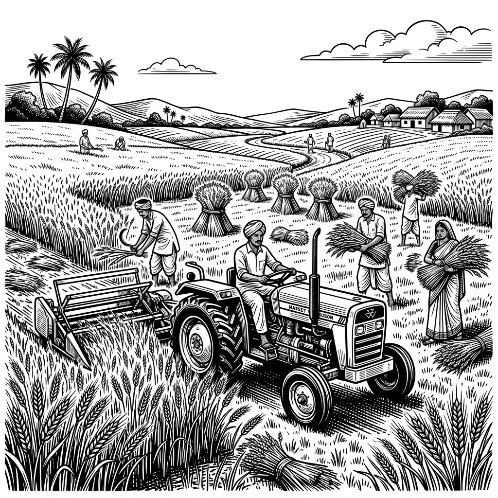
भारत की अनाज क्रांति: अब हमें किसी के सामने हाथ फैलाने की जरूरत नहीं थी। (NCERT Perspective)
🛑 मुख्य विचार:
हरित क्रांति का सबसे बड़ा फायदा यह हुआ कि भारत ने **'भूख'** पर जीत हासिल कर ली। लेकिन पर्यावरण पर इसके जो असर पड़े, उन्हें हम आज भी भुगत रहे हैं। विकास का यह रास्ता 'सफल' तो था, लेकिन पूरी तरह 'सतत' नहीं।
🌾 हरित क्रांति का संपूर्ण विश्लेषण (कारण, फायदे और नुकसान)
📅 हरित क्रांति के 5 प्रमुख कारण (Causes / Background):
- 1. गंभीर खाद्यान्न संकट (Severe Food Crisis): 1960 के दशक के मध्य में लगातार दो वर्षों के सूखे के कारण देश में खाद्यान्न का भयंकर अभाव हो गया था।
- 2. विदेशी मुद्रा की तंगी व राजनीतिक दबाव: खाद्यान्न आयात के लिए भारत को अमेरिका के राजनीतिक दबाव (PL-480) और शर्तों को मानना पड़ता था, जिससे राष्ट्रीय संप्रभुता को खतरा था।
- 3. जनसंख्या विस्फोट: तेजी से बढ़ती जनसंख्या की भोजन आवश्यकताओं को पूरा करने के लिए पारंपरिक कृषि तकनीकें अपर्याप्त साबित हो रही थीं।
- 4. नई कृषि तकनीक का आगमन: मैक्सिको के वैज्ञानिक नॉर्मन बोरलॉग द्वारा विकसित उच्च उत्पादकता वाले बौने बीजों (HYV Seeds) का सफल परीक्षण हो चुका था।
- 5. नीतिगत बदलाव (New Strategy): सरकार ने पहले के पिछड़े क्षेत्रों में निवेश करने के बजाय उन क्षेत्रों (पंजाब, हरियाणा) पर ध्यान केंद्रित करने की नीति अपनाई जहां सिंचाई के साधन पहले से मौजूद थे।
📈 हरित क्रांति के 5 प्रमुख फायदे व सकारात्मक प्रभाव (Advantages):
- 1. खाद्यान्न उत्पादन में रिकॉर्ड वृद्धि: गेहूं और चावल की पैदावार में ऐतिहासिक वृद्धि हुई, जिससे भारत में खाद्य सुरक्षा सुनिश्चित हुई।
- 2. खाद्यान्न के क्षेत्र में आत्मनिर्भरता: भारत अब विदेशों से अनाज भीख मांगने वाले देश से बदलकर खाद्यान्न के मामले में पूरी तरह आत्मनिर्भर हो गया।
- 3. किसानों की आर्थिक स्थिति में सुधार: पंजाब, हरियाणा और पश्चिमी उत्तर प्रदेश के बड़े व मध्यम किसानों की समृद्धि में अभूतपूर्व वृद्धि हुई।
- 4. कृषि का यंत्रीकरण (Mechanization): खेती में ट्रैक्टर, थ्रेशर, ट्यूबवेल और रासायनिक उर्वरकों के बढ़ते उपयोग से श्रम की बचत हुई और कृषि का आधुनिकीकरण हुआ।
- 5. बफर स्टॉक का निर्माण: सरकार फसल की खरीद (MSP) करके भविष्य के संकटों से निपटने के लिए भारतीय खाद्य निगम (FCI) के माध्यम से बफर स्टॉक बनाने में सफल रही।
⚠️ हरित क्रांति के 5 प्रमुख नुकसान, सीमाएं व नकारात्मक प्रभाव (Disadvantages):
- 1. बढ़ती आर्थिक और वर्ग असमानता: हरित क्रांति का लाभ केवल अमीर और बड़े किसानों को मिला, जिससे छोटे और सीमांत किसान पिछड़ गए और वर्ग संघर्ष बढ़ा।
- 2. क्षेत्रीय असंतुलन (Regional Imbalance): इसका लाभ केवल पंजाब, हरियाणा और पश्चिमी उत्तर प्रदेश तक सीमित रहा, जबकि पूर्वी भारत, दक्षिण भारत और सूखाग्रस्त क्षेत्र अछूते रह गए।
- 3. केवल कुछ फसलों तक सीमित: यह मुख्य रूप से गेहूं और कुछ सीमा तक चावल की फसल तक ही सीमित रही। देश में दलहन, तिलहन और मोटे अनाज पिछड़ गए।
- 4. गंभीर पर्यावरणीय संकट: रासायनिक उर्वरकों और कीटनाशकों के अत्यधिक उपयोग से मिट्टी का उपजाऊपन कम हुआ और कैंसर जैसी गंभीर बीमारियों का प्रसार हुआ।
- 5. भूजल स्तर में भारी गिरावट: अत्यधिक ट्यूबवेल सिंचाई (Water Intensive Farming) के कारण पंजाब और हरियाणा में भूजल का स्तर खतरनाक रूप से गिर गया।
भाग 5: श्वेत क्रांति और विकेंद्रीकृत नियोजन
अनाज के साथ-साथ भारत ने 'दूध' के मामले में भी एक बड़ी क्रांति देखी। डेयरी उत्पादों की यह सफलता दुनिया भर के लिए एक मिसाल बन गई।
1. श्वेत क्रांति (White Revolution)
दूध के उत्पादन में अभूतपूर्व वृद्धि को **'श्वेत क्रांति'** कहा गया। इसे 'ऑपरेशन फ्लड' (Operation Flood) के नाम से भी जाना जाता है।
- वर्गीज कुरियन (Verghese Kurien): इन्हें भारत का 'मिल्कमेन' (Milkman of India) कहा जाता है।
- अमूल (Amul): गुजरात के आणंद शहर में शुरू हुई यह सहकारी संस्था (Cooperative) आज दुनिया की सबसे बड़ी दूध उत्पादक कंपनियों में से एक है।
- सहकारी मॉडल: इसमें दूध उत्पादक ही खुद कंपनी के मालिक होते हैं, जिससे बिचौलियों का अंत होता है और किसानों को सही दाम मिलता है।
⚡ विकेंद्रीकृत नियोजन (Decentralized Planning)
क्या विकास की योजनाएँ केवल दिल्ली में बैठकर बननी चाहिए? नहीं, केरल ने एक नया रास्ता दिखाया।
- 1. 'बॉटम-अप' मॉडल: केरल में योजनाएँ पंचायतों और स्थानीय लोगों के मशविरे से बनती हैं।
- 2. जन-भागीदारी: शिक्षा, स्वास्थ्य और बुनियादी सुविधाओं के लिए स्थानीय स्तर पर फैसले लिए जाते हैं।
- 3. केरल मॉडल: इस मॉडल में आर्थिक वृद्धि की तुलना में 'मानव विकास' (Human Development) पर ज्यादा जोर दिया जाता है। (NCERT Insight)
2. विकास के 'अंतर्विरोध' और सीख
श्वेत क्रांति ने जहाँ किसानों को सशक्त बनाया, वहीं केरल मॉडल ने दिखाया कि कम पैसे में भी उच्च दर्जे का 'मानव विकास' संभव है। ये दोनों उदाहरण हमें बताते हैं कि विकास केवल भारी उद्योगों से ही नहीं, बल्कि आम जनता की भागीदारी से भी सफल हो सकता है। (NCERT View)
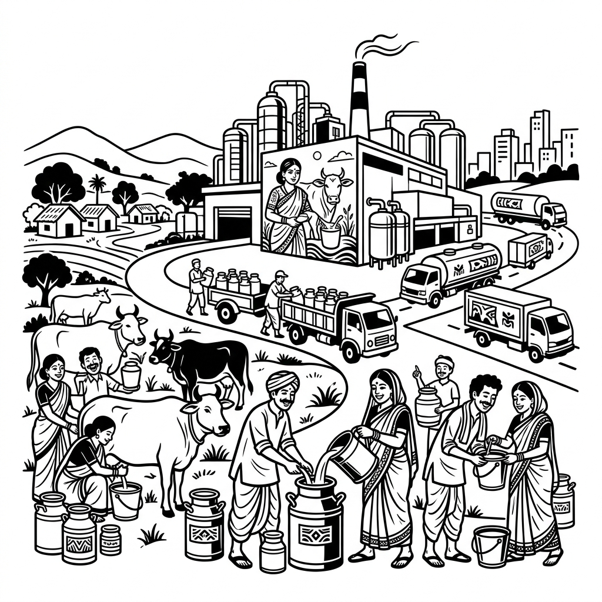
अमूल की सफलता: सहकारी आंदोलन की सबसे बड़ी जीत। (NCERT Success Story)
🛑 मुख्य विचार:
श्वेत क्रांति और केरल मॉडल ने विकास के एक नए मार्ग की शुरुआत की। ये बताते हैं कि **'सहयोग'** और **'स्थानीय भागीदारी'** विकास के सबसे मजबूत खंभे हैं। भविष्य का भारत इन्हीं खंभों पर टिका होगा!
भाग 6: नीति आयोग (NITI Aayog) - आधुनिक भारत का दृष्टिकोण
21वीं सदी में भारत की जरूरतें बदल गईं। अब पुरानी 'योजना आयोग' की जगह एक नए संस्थान ने ली है—**नीति आयोग**। यह नए भारत के विकास का 'थिंक टैंक' है।
1. योजना आयोग का अंत
15 अगस्त 2014 को प्रधानमंत्री नरेंद्र मोदी ने लाल किले से **योजना आयोग** को खत्म करने की घोषणा की। 1 जनवरी 2015 को इसकी जगह **नीति आयोग** (NITI Aayog - National Institution for Transforming India) की स्थापना हुई।
क्यों बदला गया? योजनाओं को अब दिल्ली में बैठकर ऊपर से नीचे (Top-Down) थोपा नहीं जा सकता था। अब राज्यों की सक्रिय भूमिका और जन-भागीदारी (Bottom-Up) की जरूरत थी।
🛡️ नीति आयोग की विशेषताएँ
नीति आयोग केवल योजनाओं का पैसा बांटने वाला संस्थान नहीं है, इसके मुख्य लक्ष्य ये हैं:
- 1. सहकारी संघवाद (Cooperative Federalism): राज्यों के साथ मिलकर काम करना और उन्हें विकास का साझेदार बनाना।
- 2. थिंक टैंक (Think Tank): रणनीतिक और तकनीकी सलाह देना।
- 3. निचले स्तर से योजना: पंचायतों और स्थानीय स्तर से विकास के सुझाव लेना।
- 4. संरचना: प्रधानमंत्री (अध्यक्ष), उपाध्यक्ष, मुख्य कार्यकारी अधिकारी (CEO) और राज्यों के मुख्यमंत्री।
2. सतत विकास लक्ष्य (SDGs)
आज नीति आयोग का सबसे बड़ा लक्ष्य है—**सतत विकास**। यानी ऐसा विकास जो आज की जरूरतों को भी पूरा करे और आने वाली पीढ़ियों के लिए संसाधनों को भी बचाए। (NCERT Perspective)
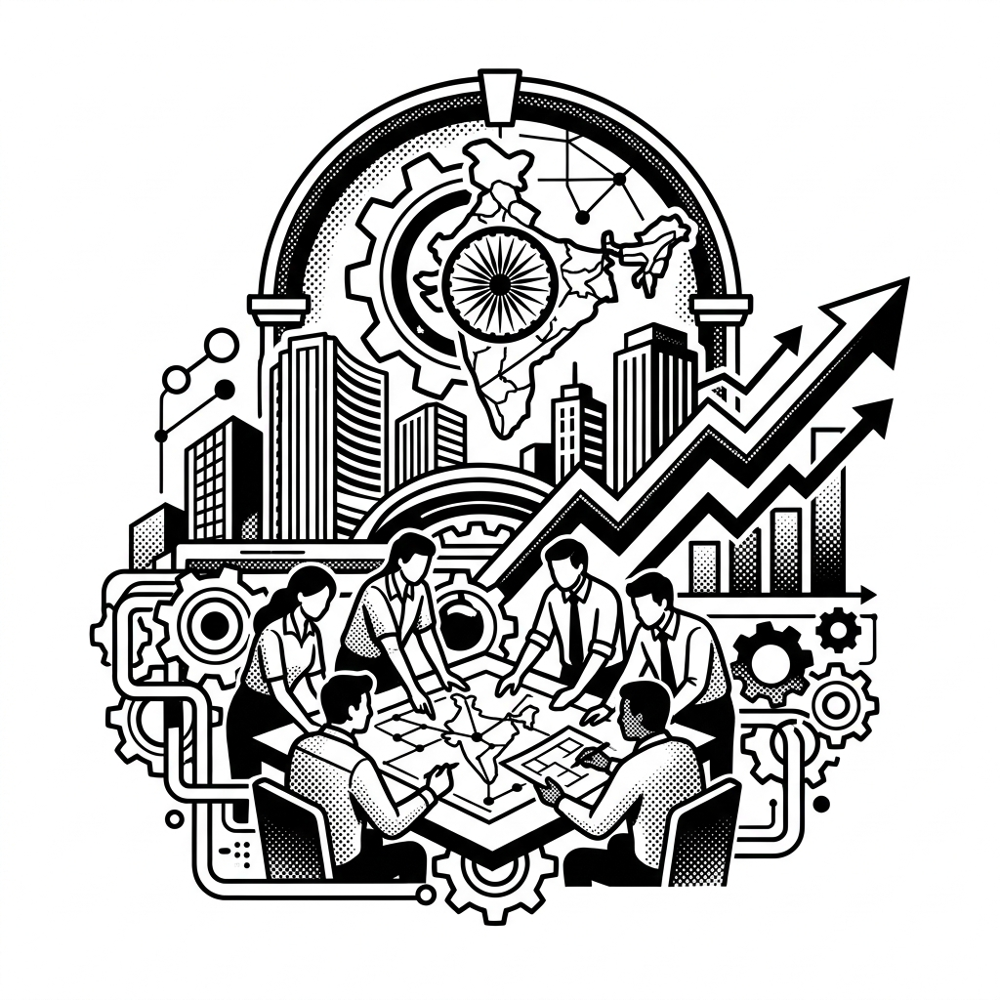
नया भारत: नीति आयोग के साथ समावेशी विकास की ओर कदम। (NCERT Archive View)
🛑 मुख्य विचार:
नीति आयोग भारत के विकास की नई पहचान है। यह 'सबका साथ, सबका विकास' के मंत्र पर आधारित है। अब विकास एक प्रतिस्पर्धा नहीं, बल्कि एक साझी जिम्मेदारी है।
📊 योजना आयोग बनाम नीति आयोग: विस्तृत तुलना और ढांचा
❓ योजना आयोग को हटाकर नीति आयोग क्यों लाया गया? (5 प्रमुख कारण):
- 1. सहकारी संघवाद की आवश्यकता: योजना आयोग में राज्यों की भूमिका बहुत सीमित थी। नीति आयोग में राज्यों के मुख्यमंत्रियों को शासी परिषद (Governing Council) का हिस्सा बनाकर निर्णय प्रक्रिया में बराबर का हक दिया गया।
- 2. 'नीचे से ऊपर' (Bottom-Up) मॉडल: योजना आयोग में योजनाएं दिल्ली में बनती थीं और राज्यों पर थोपी जाती थीं (Top-Down)। नीति आयोग में योजनाएं ग्रामीण/स्थानीय स्तर से ऊपर की ओर बनती हैं।
- 3. थिंक टैंक (Think Tank) के रूप में कार्य: योजना आयोग का मुख्य काम मंत्रालयों और राज्यों को धन का आवंटन करना था, जिससे भ्रष्टाचार और सुस्ती बढ़ती थी। नीति आयोग केवल तकनीकी और रणनीतिक सलाह देता है; वित्तीय आवंटन का कार्य वित्त मंत्रालय करता है।
- 4. बदलती आर्थिक जरूरतें: 1950 का दशक समाजवाद और सार्वजनिक क्षेत्र का था, जबकि 21वीं सदी का भारत निजी क्षेत्र की सक्रिय भागीदारी, वैश्वीकरण और तकनीकी प्रगति का है। इसके लिए एक आधुनिक थिंक टैंक की जरूरत थी।
- 5. त्वरित निर्णय और कार्यकुशलता: योजना आयोग की नौकरशाही और लालफीताशाही की तुलना में नीति आयोग अधिक लचीला, विशेषज्ञ-आधारित और परिणाम-उन्मुख (Result-oriented) है।
🏢 योजना आयोग का ढांचा (Structure):
- • अध्यक्ष: भारत के प्रधानमंत्री (पदेन)।
- • उपाध्यक्ष: योजना आयोग का वास्तविक कार्यकारी प्रमुख, जो कैबिनेट मंत्री के समकक्ष होता था।
- • सदस्य: कुछ पूर्णकालिक सदस्य और कुछ केंद्रीय कैबिनेट मंत्रियों को अंशकालिक सदस्य बनाया जाता था।
- • सचिव: प्रशासनिक कार्यों के लिए सरकारी सचिव।
- • विशेषता: इसमें राज्यों के मुख्यमंत्रियों का कोई सीधा और स्थायी प्रतिनिधित्व नहीं था (केवल राष्ट्रीय विकास परिषद - NDC के माध्यम से सलाह ली जाती थी)।
🚀 नीति आयोग का ढांचा (Structure):
- • अध्यक्ष: भारत के प्रधानमंत्री (पदेन)।
- • शासी परिषद (Governing Council): सभी राज्यों के मुख्यमंत्री और केंद्र शासित प्रदेशों के उपराज्यपाल (इसकी जान है)।
- • उपाध्यक्ष: प्रधानमंत्री द्वारा नियुक्त किया जाता है (कैबिनेट मंत्री का दर्जा)।
- • मुख्य कार्यकारी अधिकारी (CEO): प्रधानमंत्री द्वारा नियुक्त किया जाता है, जो भारत सरकार के सचिव स्तर का पेशेवर अधिकारी होता है।
- • विशेषज्ञ/विशिष्ट आमंत्रित सदस्य: विभिन्न क्षेत्रों के विशेषज्ञ और शिक्षाविद् जिन्हें प्रधानमंत्री आमंत्रित करते हैं।
📋 योजना आयोग और नीति आयोग में मुख्य अंतर:
| तुलना का आधार |
योजना आयोग (Planning Commission) |
नीति आयोग (NITI Aayog) |
| 1. दृष्टिकोण (Approach) |
ऊपर से नीचे (Top-Down Approach) - केंद्र योजनाएं बनाता था। |
नीचे से ऊपर (Bottom-Up Approach) - पंचायत और राज्य स्तर से योजनाएं बनती हैं। |
| 2. राज्यों की भूमिका |
राज्यों की भूमिका बहुत कम थी; वे केवल धन लेने वाले होते थे। |
राज्यों की सक्रिय भूमिका; सहकारी संघवाद पर आधारित शासी परिषद का गठन। |
| 3. वित्तीय अधिकार |
राज्यों और मंत्रालयों को धन आवंटित करने की शक्ति प्राप्त थी। |
धन आवंटित करने का कोई अधिकार नहीं है (यह कार्य अब केवल वित्त मंत्रालय का है)। |
| 4. मुख्य कार्य |
मंत्रालयों और राज्य सरकारों के लिए पंचवर्षीय योजनाएं तैयार करना। |
रणनीतिक नीति-निर्माण और राष्ट्रीय/अंतरराष्ट्रीय महत्व के मुद्दों पर 'थिंक टैंक' सलाह। |
| 5. संरचना व विशेषज्ञ |
मुख्य रूप से सरकारी अधिकारियों और नौकरशाहों पर आधारित था। |
पेशेवर विशेषज्ञों, शिक्षाविदों और वैज्ञानिकों को शामिल किया जाता है (CEO प्रणाली)। |
अध्याय 10: मेगा प्रश्न बैंक (Board Exam Special)
1. अध्याय का सार (Chapter Summary)
इस अध्याय में हमने देखा कि भारत ने कैसे विकास के लिए 'नियोजन' का रास्ता चुना और पंचवर्षीय योजनाओं के जरिए आत्मनिर्भरता हासिल की।
खंड A: अति-लघु उत्तरीय प्रश्न (1 अंक)
- Q1: योजना आयोग की स्थापना कब हुई थी?
Ans: मार्च 1950 में।
- Q2: 'मिल्कमेन ऑफ इंडिया' किसे कहा जाता है?
Ans: डॉ. वर्गीज कुरियन (Dr. Verghese Kurien)।
- Q3: 'नीति आयोग' (NITI Aayog) का गठन कब हुआ?
Ans: 1 जनवरी 2015।
- Q4: 'बम्बई योजना' (Bombay Plan) कब पेश की गई थी?
Ans: 1944 में।
खंड B: लघु उत्तरीय प्रश्न (4 अंक)
- Q1: पहली और दूसरी पंचवर्षीय योजना के बीच मुख्य अंतर क्या था?
Ans: पहली योजना का मुख्य ध्यान 'कृषि' और सिंचाई पर था, जबकि दूसरी योजना का ध्यान 'भारी उद्योगों' के विकास पर था।
- Q2: 'मिश्रित अर्थव्यवस्था' (Mixed Economy) से आप क्या समझते हैं?
Ans: वह प्रणाली जिसमें 'सार्वजनिक क्षेत्र' (Sarkar) और 'निजी क्षेत्र' (Private) दोनों साथ-साथ काम करते हैं।
खंड C: दीर्घ उत्तरीय प्रश्न (6 अंक) [V.V. IMP]
Q: हरित क्रांति (Green Revolution) क्या थी? इसके दो सकारात्मक और दो नकारात्मक प्रभावों का वर्णन करें।
Ans:
- क्या थी: खेती में आधुनिक तकनीकों और उन्नत बीजों (HYV) का इस्तेमाल।
- सकारात्मक: अनाज में आत्मनिर्भरता, किसानों की आय बढ़ी।
- नकारात्मक: क्षेत्रीय असमानता (पंजाब-हरियाणा का ही विकास), पर्यावरण को नुकसान (मिट्टी और पानी)।
अध्याय 10 का 'गुरुमंत्र' (Master Notes Summary)
- 1. भारत ने सोवियत संघ के प्रभाव में 'नियोजित विकास' का रास्ता चुना।
- 2. के. एन. राज (पहली योजना) और पी. सी. महालनोबिस (दूसरी योजना) मुख्य चेहरा थे।
- 3. कृषि और उद्योग के बीच का विवाद आज भी विकास की राजनीति का केंद्र है।
- 4. हरित क्रांति ने भारत को अनाज के क्षेत्र में दुनिया का सिरमौर बनाया।
- 5. अमूल की सफलता ने 'सहकारी आंदोलन' और 'श्वेत क्रांति' की नींव रखी।
- 6. नीति आयोग नए भारत का 'सहकारी संघवाद' वाला नया चेहरा है।
- 7. विकास का मार्ग हमेशा समावेशी (Inclusive) होना चाहिए!